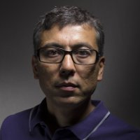

NAMKHAI YESHI SILVANO
Viale Benedetto Croce 24/10, 50126 Firenze
+39 3409877535
yeshi.namkhai@gmail.com
www.my-hexagon.it
Nato in Italia il 3/7/1970, sposato con due figli, automunito con patente B.
Autorizzo il trattamento dei miei dati personali ai sensi del Decreto Legislativo 30 giugno 2003, n. 196 "Codice in materia di protezione dei dati personali".
Educazione
- AFAM Conservatorio Luigi Cherubini, corso triennale in Musica Elettronica, Firenze 2019-2022, in corso.
- Percorso di formazione formale della Reg. Toscana, denominato ICT Analyst & Project Manager, risultato formativo certificato di competenze ADA/UC N 2089 - 2084 - 2076, durata 180 ore, Arezzo 2019.
- Corsi di formazione online su Blockchain organizzati da IBM, codici BC0101EN e BC0201EN, risultato formativo: certificati e badge, luglio 2019.
- Corso di PL/SQL online di Udemy, organizzato da CompuWorks, risultato formativo: certificato, 2016.
- Corso di JavaScript online organizzato di Gymnasium, risultato formativo: certificato, ottobre 2015.
- Corso di LINUX online organizzato da Linux Foundation, codice LFS101x, risultato formativo: certificato, agosto 2014.
- Corso di grafica 3d organizzato da Autodesk, codice CS291, risultato formativo: certificato, 2013.
- Corso di web development online di Udacity, codice CS253, risultato formativo: certificato, 2013.
- Corso di python semestrale online organizzato da MIT, codice 6.00x, risultato formativo: certificato, 2012.
- Formazione-lavoro 4 mesi organizzato da SDA BOCCONI, risultato formativo: ORGANIZZAZIONE e GESTIONE AZIENDALE, Imola, 2004.
- Formazione-lavoro 8 mesi organizzato da DELOITTE & TOUCHE, risultato formativo: Consolidato del gruppo SACMI con tec. HYPERION, Imola, 2003.
- Certificazione APPLICATION CONSULTANT “Accounting”, presso SAP Italia, 2002.
- Formazione-lavoro 24 mesi presso Idea Software Srl/Twinergy, risultato formativo: ANALISTA PROGRAMMATORE - Consulente su Sistemi Gestionali Integrati, 1998-2000. Regione Emilia Romagna (EBER Formazione).
- Frequenza INGEGNERIA INFORMATICA, Università di Bologna, 1997.
- Frequenza LETTERE E FILOSOFIA, La Sapienza, 1989.
- Diploma in lingue presso LICEO LINGUISTICO W. SHAKESPEARE, 1988.
Esperienza professionale
- Dal 2008- libero professionista con HEXAGON, consulente informatico e insegnante.
- 2014-2016 presso ASS. CULTURALE COMUNITÀ DZOGCHEN con mansione di specialista in comunicazione digitale e informatico, Arcidosso.
- Prototipo - INFRACOM con qualifica di CAPO PROGETTO inq. 9 liv. Quadro CCNL Metalmeccanica, con mansione di Responsabile di Filiale, Roma, 2006.
- Socio di AMBIENTIWEB con mansione di CAPO PROGETTO, Grosseto 2005.
- Prototipo - SACMI con qualifica e mansione di CAPO PROGETTO e ANALISTA FUNZIONALE inq. 1 liv. CCNL Commercio, Imola 2002.
- SVC Italia-ITelligence con qualifica e mansione di CONSULENTE SAP R/3 inq. 2 liv. CCNL Commercio, Imola, 2000-2001.
- PROXIMA-IBM con qualifica di ANALISTA PROGRAMMATORE inq. 4 liv. CCNL Metalmeccanica, con mansione sistemista su AS/400, Ravenna, 1998.
Competenze informatiche
- Ottima conoscenza di software ERP di JDEdward, SAP, ORACLE e buona conoscenza di performance management e business intelligence di SAP, HYPERION e BUSINESS OBJECTS.
- Ottima conoscenza dei sistemi di database relazionali come Oracle, DB2 e DB/400, MsSQL, PostgreSQL, MySQL e la programmazione SQL. Buona conoscenza dei database non relazionali come MongoDB.
- Buona conoscenza dei paradigma di programmazione più diffusi e dei design patterns.
- Buona esperienza nella programmazione in C/C++, JAVA, Pascal, Python, PHP, Basic, Delphi/Lazarus, xBase/Clipper, ABAP/4, Javascript.
- Ottima conoscenza del mondo open-source ed esperienza comprovata nell'uso, configurazione e sviluppo di software open-source.
- Ottima esperienza nella programmazione con linguaggi di scripting per amministrazione come le varie shell UNIX e per il web come HTML, CSS, Javascript.
- Ottima conoscenza dei sistemi operativi più diffusi come Windows, UNIX, Linux, Mac OSX, embedded nei devices e AS/400. Buona conoscenza dei sistemi hardware consumer ed enterprise, vari standard tecnici e normative.
- Buona conoscenza del software per l'automazione d'ufficio, grafica, desktop publishing, design, editing video e audio, multimedia, musica.
- Notevole competenza nel design di siti web e in tutti i processi creativi basati sul design e l'interazione, considerevole esperienza anche nell'insegnamento di tali approcci (design thinking) e nei processi di dialogo (dialog mapping) o di esplorazione (discovery).
- Ottima conoscenza della interaction design, la robotica e i processi di prototipazione e tinkering con Arduino, AVR, Lego Mindstorm.
Lingue
- Italiano, madre lingua
- Inglese, C1
- Francese, B2
- Tedesco, A2
- Spagnolo, B1
Altre competenze
Capace nella pianificazione e realizzazione di progetti. Buon comunicatore. Veloce nell’apprendimento teorico e nella traduzione immediata in applicazioni reali. Capace nell’analisi, nella formalizzazione e risoluzione dei problemi. Attento e riflessivo.
Interessi
Jazz, basso elettrico, musica elettronica, cinema, fisica e matematica, computer, fantascienza, filantropia.
Competenze musicali
Ho frequentato un paio di anni il corso musicale presso la Scuola di Popolare di Musica di Testaccio, scegliendo lo strumento basso elettrico. Ho perfezionato l’esecuzione e l’improvvisazione con il maestro Paolo Ghetti presso European Jazz Network di Ravenna, e presso lo stesso istituto ho anche studiato pianoforte jazz. Ho suonato in alcune band: reggae, metal, funk e jazz. Ho partecipato con una mia composizione al 5th Tehran International Electronic Music Festival, alla rassegna di musiche elettroniche del Conservatorio Cherubini STEMS 2022, e partecipo alla XVI edizione del Premio delle Arti.
Pagina web con la mia musica
https://soundcloud.com/yeshisilvanonamkhai
Competenze comunicative e interpersonali
Esperto di prevendita, relazioni pubbliche e filantropia. Dedico tutto il mio tempo libero alla conoscenza e agli studi interculturali concedendo conferenze pubbliche, seminari e collaborazione a progetti operativi.
Settori industriali
Esperto in analisi dei processi di business e l'implementazione di software ERP, in particolare SAP, per i principali settori industriali:
- banche
- consumer products
- engineering construction & operations
- educazione superiore
- industrial machinery
- manifatturiero
- media
- oil & gas
- servizi
- settore pubblico
- retail
- telecomunicazioni
- trasporti
- utenze
- grande distribuzione
Ruolo in progetti SAP
In qualità di programmatore ABAP/4, ho avuto il piacere di lavorare con clienti come:
ARTEMIDE www.artemide.com
LAPERLA www.laperla.it
BULGARI www.bulgari.com
PFIZER www.pfizer.com
TEDDY www.teddy.it
MIRAGE www.mirage.it
SACMI www.sacmi.com
META www.gruppohera.it
CONSERVE www.conserveitalia.it
OMNITEL www.vodafone.it
In qualità di consulente senior, ho avuto il piacere di lavorare con clienti come:
INFOGROUP www.infogroup.it
SAN PELLEGRINO www.cspinternational.it
DEGUSSA www.degussa.de
MITSUBISHI PAPER MILL www.mitsubishi-paper.com
PACORINI www.pacorini.it
DESPAR www.aspiag.com
EUROSABBIE www.sibelco-italia.com
FELAS www.felas.it
CTM www.ctmcagliari.it
In qualità di capo progetto, ho avuto il piacere di lavorare con clienti come:
UNIVERSITA DI MALTA www.um.edu.mt
COOP RISANAMENTO www.cooprisanamento.it
ISA www.isaspa.it
FIAT FERROVIARIA www.alstom.com
CRIF www.crif.it
MCLINK www.mclink.it
COMUNE DI ROMA www.comune.roma.it
DATATRAK www.datatrak.ws
AS/400
In qualità di sistemista e referenza JDEdwards ERP per l'Italia, ho avuto il piacere di lavorare con clienti come:
ALUSISSE www.riotinto.com
D&C www.dec.it
DIESEL www.diesel.com
LOTTO www.lottosport.com
SIM2 www.sim2.it
SYROM www.syrom.it
BORMIOLI ROCCO www.bormiolirocco.it
CALVIN KLEIN www.calvinklein.com
Web e altro
In qualità di account manager ho svolto progetti di gestione e innovazione tecnologica, ho avuto il piacere di lavorare con:
ISTITUTO SUPERIORE DI SANITA www.iss.it
CARLE & MONTANARI www.carle-montanari.it
GRAM EQUIPMENT www.gram-equipment.com
CASAGIT www.casagit.it
ABI www.abi.it
MEDIAMODA www.mediamoda.ru
LEAM www.leam.com
GROSSETO EUROFOOD www.grossfood.ru
KARPUS www.karpus.com.ua
CANARY COMPANY www.canarycompany.com